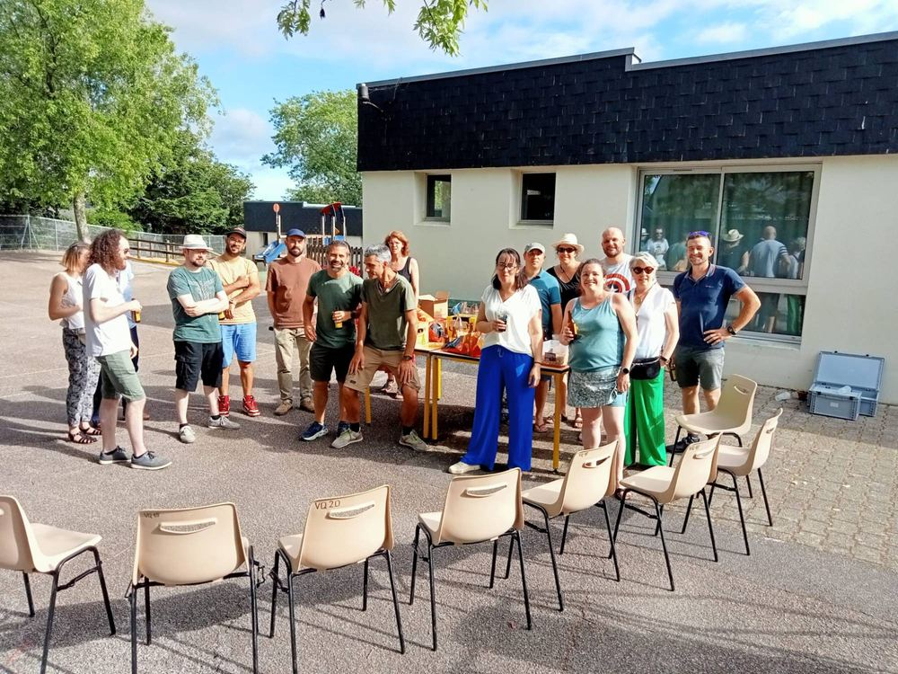
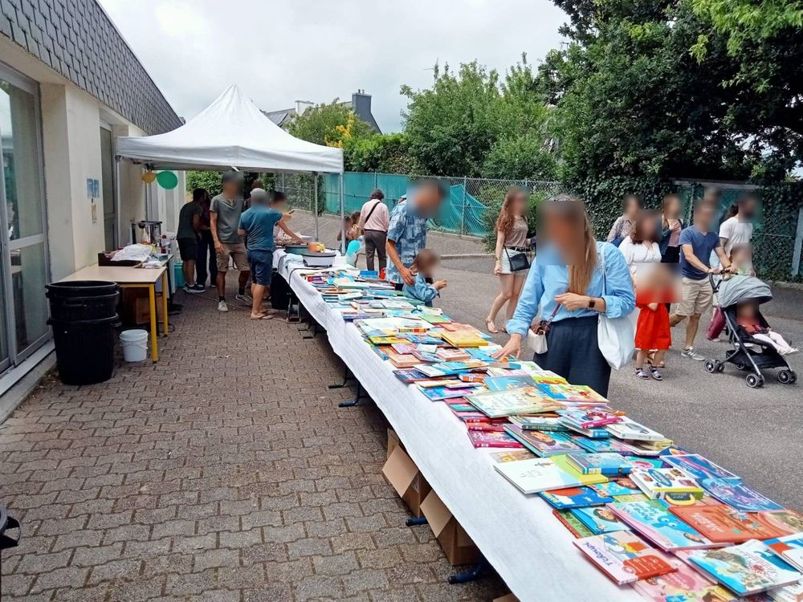

APE École Jacques Prévert
Notre association accompagne les enseignantes dans le financement des activités du projet pédagogique, renforce le lien entre les parents d'élèves de l'école Jacques Prévert, et garantit un échange entre le corps éducatif et la mairie de Quimper.
Vente de gâteaux — Halloween — Vendredi 9 octobre 2026, sortie de l'école


Qui sommes-nous
L'Association des Parents d'Élèves (APE) est une association loi 1901, gérée bénévolement par des parents volontaires. Elle accompagne les enseignantes dans le financement des activités du projet pédagogique, renforce le lien entre les familles, et assure un dialogue régulier entre le corps éducatif et la mairie de Quimper.
Pourquoi adhérer
En adhérant à l'APE, vous participez activement à la vie de l'école et de l'association. Votre cotisation permet de financer des projets proposés par les enseignantes (sorties scolaires, matériel pédagogique, spectacles...), et vous pouvez aussi donner un coup de main lors de nos événements. Chaque adhésion compte pour nos enfants !
Adhérer en ligne
Le paiement de la cotisation se fait en ligne, en toute sécurité, via la plateforme HelloAsso.
Adhérer sur HelloAssoÉvénements de l'année
Vente de gâteaux — Halloween
Vente de gâteaux faits maison à la sortie de l'école, de 16h40 à 18h, au profit des projets pédagogiques.
Vente de sapins de Noël
Commandez votre sapin de Noël pour soutenir les projets de l'école. Bon de commande à imprimer et à retourner avec votre règlement.
Photo de classe
Séance de photo individuelle et de classe pour tous les élèves.
Vente de gâteaux — Noël
Vente de gâteaux faits maison à la sortie de l'école, de 16h40 à 18h, au profit des projets pédagogiques.
Vente de gâteaux — Hiver
Vente de gâteaux faits maison à la sortie de l'école, de 16h40 à 18h, au profit des projets pédagogiques.
Vente de gâteaux — Pâques
Vente de gâteaux faits maison à la sortie de l'école, de 16h40 à 18h, au profit des projets pédagogiques.
Kermesse
Fête de fin d'année avec jeux, stands et spectacle préparé par les enfants. *Date à confirmer par la mairie.
Nos actions pour les enfants
Grâce aux fonds collectés lors de nos événements, l'APE finance chaque année :
Sorties
Sorties théâtre – Très Tôt Théâtre
Sorties cinéma – Katorza / Cinéville
Sorties pédagogiques
Organisation de la kermesse
Fête de fin d'année avec jeux, stands et spectacle préparé par les enfants.
Ventes de gâteaux
Ventes organisées tout au long de l'année pour financer les projets pédagogiques.
Documents utiles
Le bureau de l'APE
Présidence
Florian Masseube
Classe des enfants : CM1/CM2 monolingue
florian.masseube@gmail.com
Trésorerie
Aurélie Garnier
Classe des enfants : CM1/CM2 monolingue
aurelie.grevellec@yahoo.fr
Secrétariat
Carole Bilski
Classe des enfants : PS bilingue
carole.bilski@ac.rennes.fr
Contact
Une question, une idée, envie de rejoindre l'aventure ? Écrivez-nous !
Nous joindre directement
- apejacquesprevertquimper@gmail.com
- École Jacques Prévert, Quimper
Réponse sous quelques jours. Merci de votre confiance !
Envie de nous aider ?
Rejoignez l'équipe de bénévoles pour préparer les événements et accéder au planning des permanences.
Espace bénévoles